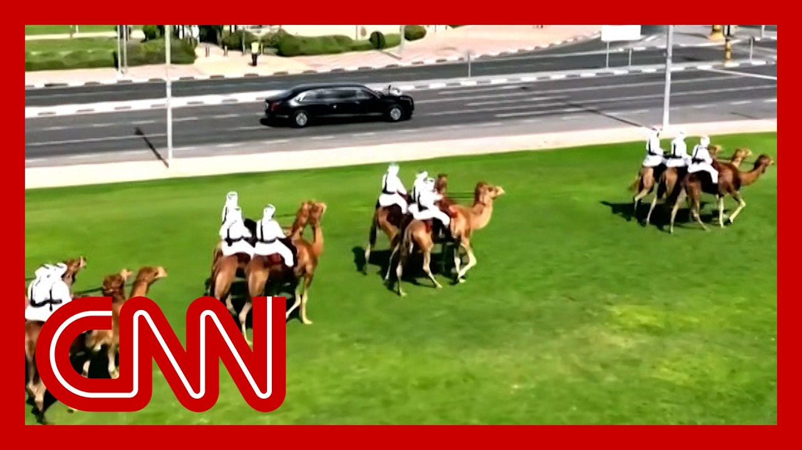

【特朗普到访卡塔尔受隆重欢迎：红色赛博卡车与骆驼骑兵列队相迎】
Summary: The US president visited Doha during his Middle East tour, attracting significant regional and global attention. Trump's arrival featured grand ceremonies, including camels and red Cybertrucks referencing Elon Musk. Bilateral meetings and potential multi-billion-dollar investment deals were planned. Before landing, Trump discussed his meeting with Syrian President Ahmed Al Shara, praising him as a strong leader. He also announced plans to lift US sanctions on Syria, crediting Saudi and Turkish leaders for influencing this decision. Trump later attended a Gulf Cooperation Council meeting, praising regional allies. In Doha, his arrival included Cybertruck escorts, a red carpet, and mounted camels, highlighting Qatar's efforts to impress him. Qatar's role as a mediator in the Israel-Hamas conflict was noted, though a major deal remained elusive. Trump dispatched envoy Steve Wyckoff for hostage negotiations with Israeli and Hamas representatives. Discussions on Syria focused on normalizing relations, joining the Abraham Accords, and combating ISIS. Controversy arose over Qatar's offer of a Boeing jet to Trump, raising ethical concerns. Meanwhile, an Israeli delegation arrived in Doha for hostage talks, following the recent release of an American captive.
摘要： 美国总统在访问多哈期间的中东之行引发了地区和全球广泛关注。特朗普的到访仪式包括骆驼队列和致敬埃隆·马斯克的红色赛博卡车，并计划举行双边会议及可能达成的数千亿美元投资协议。启程前，特朗普谈及与叙利亚总统艾哈迈德·沙拉的会面，称赞其强势领导力，并宣布将解除对叙利亚制裁，归功于沙特与土耳其领导人的斡旋。特朗普随后出席海湾合作委员会会议，赞扬地区盟友。在多哈，其车队由赛博卡车开道，红毯迎接和骆驼骑兵队列尽显东道主的精心安排。卡塔尔在巴以冲突中的调解作用受关注，但重大协议仍未达成。特朗普派特使史蒂夫·怀科夫推动人质谈判。叙利亚议题聚焦关系正常化、加入《亚伯拉罕协议》及打击ISIS。卡塔尔向特朗普赠送波音飞机的提议引发道德争议。与此同时，以色列代表团抵多哈开展人质谈判，此前一名美国人质刚获释。

⏱️ Estimated Reading Time: 15 min
The US president here in Doha on the second leg of a middle East tour that has made an awful lot of news in this region and beyond.
美国总统正在多哈进行中东之行的第二站访问，此事在本地区乃至全球引发大量报道。
Donald Trump arriving to pomp and circumstance similar to what we saw yesterday in Saudi Arabia.
唐纳德·特朗普在盛大仪式中抵达，场面堪比昨日在沙特阿拉伯的欢迎式。
This time including camels and red cybertruck's, a nod to Elon Musk.
此次仪式包含骆驼队列和红色赛博卡车，以此向埃隆·马斯克致意。
Bilateral meetings are planned here, along with what are expected to be investment agreements that could reach hundreds of billions of dollars.
此行计划举行双边会议，预计将达成价值数千亿美元的投资协议。
Well before leaving Air Force One. The president talked about his extraordinary meeting in Riyadh on Tuesday with Syrian President Ahmed Al Shara.
在离开空军一号前，总统谈及周二在利雅得与叙利亚总统艾哈迈德·沙拉的特殊会晤。
Well, how did you find the Syrian president? Right. I think we're good. Young, attractive guy, tough guy. Yeah. Strong man's very strong.
"您如何看待叙利亚总统？""很好。年轻有为的硬汉，非常强悍。"
Best fighter in the world. But he's got a he's got a real shot at pulling it together.
"他是世界上最强的斗士，但确实有团结国家的能力。"
I spoke with President Erdogan, who? Very friendly with him. Yeah, he's got a shot. Before traveling here to Damascus.
"我与埃尔多安总统通话——他们关系密切。是的，他有机会。在前往大马士革前..."
Well, before that meeting, President Trump announced plans to lift punishing US sanctions on Syria.
会面前，特朗普总统宣布计划解除美国对叙利亚的严厉制裁。
He says Saudi Crown Prince Mohammed bin Salman, who attended in person, and Turkish President Recep Tayyip Erdogan, who you just mentioned, and he joined that meeting on the phone, both played an instrumental role in his decision.
他表示，亲临现场的沙特王储穆罕默德·本·萨勒曼，以及刚提及的通过电话参会的土耳其总统埃尔多安，对此决定起了关键作用。
Well, Mr. Trump later joined a meeting of the Gulf Cooperation Council, the GCC, lavishing praise on the nations in attendance and attendance and this whole region, frankly, CNN senior white House reporter Betsy Klein joining me again today.
随后特朗普出席海湾合作委员会会议，高度赞扬与会国及整个地区。CNN白宫资深记者贝琪·克莱恩再次加入讨论。
It's good to have you. You and I were in Riyadh yesterday. Were in Doha today. Take us through the play by play, as it were today, with this pomp and circumstance and also what the expectations are here in Qatar.
"欢迎您。我们昨日同在利雅得，今天来到多哈。请详述今日的盛大仪式及卡塔尔之行的预期成果。"
Certainly there was so much fanfare this morning in Doha as President Trump making his arrival the second stop of a three stop middle East tour, and his hosts really understood the assignment.
"今晨多哈以隆重仪式迎接特朗普总统的中东三站之行第二站，东道主显然深谙其喜好。"
Here we saw a fleet of cyber trucks directing the motorcade, a red carpet arrival. He was greeted by the Emir. There was a cavalry of mounted camels as he pulled in to his destination.
"我们看到赛博卡车队引导车队，红毯铺路，埃米尔亲自迎接，还有骆驼骑兵队列护送其抵达目的地。"
So really understanding what it is that makes President Trump, sensing he likes a bit of pomp and circumstance.
"这完全把握了特朗普总统偏爱盛大场面的特质。"
This is the reality television president, and he is so keenly aware of stagecraft and what things look like on television and being welcomed.
"这位真人秀出身的总统极其注重舞台效果和电视画面中的欢迎仪式。"
It's his hosts really understand that that is a key priority for them as they seek to curry favor with the president.
"东道主明白这是讨好总统的关键。"
We also have seen Qatar really emerge as a key mediator here for the United States, particularly in this Israel-Hamas conflict.
"卡塔尔已成为美国的关键调解者，尤其在巴以冲突中。"
And I think President Trump really wanted to come here and roll out some kind of big deal to end this conflict, to release the hostages.
"特朗普总统本想在此推动结束冲突、释放人质的重大协议。"
That just has proven so elusive. And so in the absence of that, the president, as you reported, is dispatching his top envoy, Steve Wyckoff.
"但此事难以实现。因此如您所述，总统正派遣高级特使史蒂夫·怀科夫。"
He's going to be meeting with top Israeli officials here in Doha today. The Israeli delegation on the ground, as he was called, is here, as you rightly suggest, Adam, Ebola is here.
"他今日将在多哈会见以色列高层。如您所言，以色列代表团已抵达——人质谈判首席代表埃博拉在场。"
The chief hostage negotiator. And these are indirect talks with Hamas. They seem to have gained some momentum.
"这些与哈马斯的间接谈判已取得一定进展。"
Once again, these talks have been ongoing. but certainly some momentum as President Trump arrives in Doha.
"谈判持续进行中，而特朗普总统的到来无疑增添了势头。"
Let's talk about this Syria story. Mr. Trump making waves for one meeting, the new president and two, lifting sanctions on the country.
"谈谈叙利亚议题：特朗普总统因1）会见新总统，2）解除对叙制裁引发震动。"
This is a crippled economy. And what happens in Syria doesn't stay in Syria.
"叙利亚经济瘫痪，其局势影响绝不限于国内。"
We know that a revitalized economy in Syria can help with regional stability and security, of course. Right.
"叙利亚经济复苏有助于地区稳定与安全。"
And I think that is why the Saudi crown prince, Mohammed as well as the Turkish president, really put some pressure on President Trump to make this decision to lift these sanctions.
"正因如此，沙特王储与土耳其总统才施压特朗普总统作出解禁决定。"
As we heard him announced last night in Riyadh. But also we saw him today meeting with the, the interim president of Syria.
"昨晚他在利雅得宣布此事，今日又会见了叙利亚临时总统。"
He says he's exploring normalizing relations. they had a quick hello and a t it lasted about 30 minutes, according to a white House official.
"他表示正探索关系正常化。据白宫官员，会晤仅持续30分钟。"
really the highest level engagement to date between the Trump administration and this interim Syrian president and President Trump gave him a series of directives.
"这是特朗普政府与叙利亚临时总统至今最高级别接触，总统向其下达多项指令。"
I just want to read to you, he, included signing on to the Abraham Accords to normalize relations with Israel, telling all foreign terrorists to leave Syria, deporting Palestinian terrorists, help the United States to prevent the resurgence of ISIS, and assume responsibility for ISIS detention centers in northern Syria.
"包括签署《亚伯拉罕协议》以实现与以色列关系正常化，驱逐所有外国恐怖分子，协助美国防止ISIS死灰复燃，并接管叙利亚北部的ISIS拘留中心。"
Now, the Syrian interim president said yes when asked about joining that, Abraham Accords pact. Eventually, according to Trump, telling reporters on Air Force One that he had a very positive meeting and that would be quite seismic.
"叙利亚临时总统对加入协议表示肯定。特朗普在空军一号上向记者称会晤'非常积极'，将产生'地震性影响'。"
We know that Donald Trump had originally hoped that normalization, which is a key pillar for his Middle East policy, would be possible between Saudi Arabia and Israel.
"众所周知，特朗普曾希望沙特与以色列实现关系正常化——其中东政策核心支柱。"
he has to concede that that is not possible at this stage, not with the ongoing crisis in Gaza, the the, conflict in Gaza and no credible pathway to a Palestinian state, no partner in peace is how it's described in this region.
"但他不得不承认当前加沙持续冲突、巴勒斯坦建国无望、以方'无和平伙伴'的现状下，此事不可行。"
No partner in peace in Israel, at present for the, Saudis. So, that, that part for the time being, certainly this directive now to the Syrian president, get inside those Abraham Accords as well. Let's see what happens with that.
"目前沙特视以色列为'无和平伙伴'。现阶段重点转向要求叙利亚总统加入《亚伯拉罕协议》，成效有待观察。"
Is good to have you. Thank you very much. Elena Treanor, white House reporter is with us right now. Elena, this is significant what the president is doing.
"感谢您的分析。现在连线白宫记者埃琳娜·特雷纳。埃琳娜，总统此行意义重大。"
Cutter and the U.S. have had a longstanding military relationship, a lot of cooperation from Qatar in terms of the U.S. military Central Command.
"卡塔尔与美国长期保持军事合作，在中央司令部事务上给予大量支持。"
I've been to Camp Australia, a military base outside of Doha. I've been to, the air base where the U.S. has a lot of fighter jets, base.
"我曾到访多哈郊外的澳大利亚营军事基地，以及驻有美军战机的空军基地。"
So there's a lot of military cooperation between the U.S. and Qatar. But now this controversy has erupted over Qatar wanting to give, the president of the United States a plane.
"美卡军事合作密切，但当前争议焦点是卡塔尔欲向美国总统赠送飞机。"
That's right. And just some other things about Qatar recently, as well as that they've been a key mediating force in a lot of the talks that they are having, particularly between, the Israelis and Hamas.
"确实。卡塔尔近期还作为关键调解方参与多场谈判，尤其是巴以之间。"
They've been very helpful in dealing with Hamas, and wanting to know expand on the cease fire agreement. That, of course, has now fallen apart.
"其在应对哈马斯方面作用显著，曾推动扩大停火协议——尽管现已破裂。"
But yes, right now we just saw them signing, this that they had the signing ceremony on aviation, having, you know, buying planes from the U.S. and then also we're told that in a degree, an agreement on defense, of course.
"但眼下我们看到双方签署航空协议——采购美国飞机，据悉还有一定程度的防务协议。"
But I do think your point about the Boeing jet, I mean, that is the one thing that everyone is paying attention to.
"但波音飞机一事确实是当前焦点。"
And actually, the president made comments last night. He did an interview with Fox News's Sean Hannity where he actually suggested, I thought this was the most striking moment of that interview where he said, you know, the Qataris suggested to him, like, let us help you if we can help you lead us.
"总统昨晚接受福克斯新闻采访时透露，卡塔尔方面表示'请让我们协助您'——这是采访最惊人之处。"
And of course, we're seeing the president show that he's very amenable to that, that he wants to accept it. He's calling it a gift to the State Department.
"总统显然倾向接受，称其为'赠予国务院的礼物'。"
But of course, it raises serious ethical questions. We've heard now from a lot of Democrats, but also Republicans and some Trump allies, people like Laura Loomer, Ben Shapiro saying like, this is not ethical. This is not legal.
"但这引发严重道德质疑。民主党人、共和党人乃至特朗普盟友如劳拉·卢默、本·夏皮罗均指责此举不道德且违法。"
And so that's, of course, something that everyone is watching for today is what's actually going to happen with that.
"因此众人关注此事后续发展。"
And of course, as well, when you talk about the plane, which the president and his team are trying to refer to as this hotel in the sky, is that it would cost still hundreds of millions of dollars to try and retrofit it.
"总统团队称该飞机为'空中酒店'，但改装仍需耗资数亿美元。"
It would take years to do that. There are so many different, security implications of this.
"改装需时数年，且涉及复杂安全问题。"
You know, Secret Service has said that this would be a security nightmare. They'd have to tear the plane apart looking for surveillance devices that they'd have to add, some of the capabilities we know that Air Force One needs.
"特勤局称这是'安全噩梦'，需拆机检查监控设备，并加装'空军一号'必备功能。"
So that's going to be a huge deal if that actually comes together. The president himself, saying that he very much thinks that he should accept that. He even said he thought he'd be stupid not to say that. Indeed.
"若成真将影响重大。总统直言'不接受才是愚蠢'。"
and there's another major development unfolding in Doha, Qatar, today, and that is an Israeli delegation is heading to Doha to continue negotiations with the U.S..
"今日多哈另一要闻：以色列代表团将赴卡塔尔与美国继续谈判。"
Steve Whitcomb, the special U.S. envoy, is already there, with Hamas to see if they can get more hostages released.
"美国特使史蒂夫·惠特科姆已抵达，将与哈马斯商讨释放更多人质。"
Right. So this has been a huge deal. I mean, I think, first of all, of course, what, has been very encouraging to the Trump administration is what we saw happen on Monday with the release of Ethan Alexander, the last living, American hostage being held by Hamas.
"确实。特朗普政府深受周一最后一名在世美国人质伊森·亚历山大获释的鼓舞。"
That timing was so significant and very strategic, I believe, on behalf of Hamas, because they recognize, you know, they didn't get anything in return for releasing him.
"哈马斯选择此时机极具策略性——他们未要求任何回报。"
and it it is, I think, from my conversations with Trump administration officials, they are viewing this as a goodwill gesture. I think the president said so himself.
"据我与特朗普政府官员交流，他们认为这是善意姿态。总统本人亦如此表态。"
And so that's really the talks today, with Steve Wyckoff leading those from the United States side.
"因此今日由史蒂夫·怀科夫主导的谈判至关重要。"
It's going to be a key part of this is how many more hostages can they release.
"关键议题是能再释放多少人质。"
And of course, trying to view this as how can they get back to ceasefire talks, because we have seen that fall apart.
"同时试图重启已破裂的停火谈判。"
And all of this comes, of course, as there has been some frustration. We've been reporting behind the scenes with Trump administration officials and Israeli Prime Minister Benjamin Netanyahu.
"这些进展背后，特朗普政府与以色列总理内塔尼亚胡之间存在摩擦。"
A lot of people questioning is he actually committing to committed to ending this war?
"越来越多人质疑他是否真心致力于结束战争。"
And I think we should get some more insights on depending on how those negotiations go today.
"今日谈判结果将提供更多线索。"